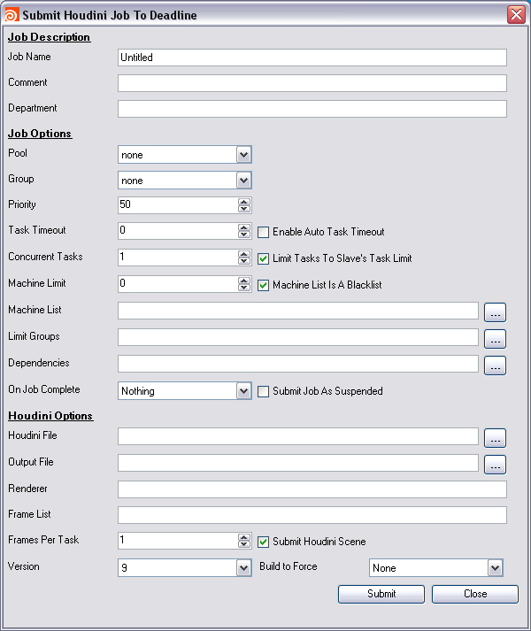

|
|
|
| Typed | Frame Split - Cmd+Numbers | Cmd Array | |||||||||||
|---|---|---|---|---|---|---|---|---|---|---|---|---|---|
|
|||||||||||||
| Данные для типа | Разбиваем на кадры | Готовые к запуску команды | |||||||||||
|
Тип: Nuke Сцена: scene.nk Write-нода: Write1 Начальный кадр: 1 Конечный кадр: 100 Разбиваем по: 10 |
команда с переменными, начальный, конечный кадры и сколько кадров на подзадачу (или на компьютер). nuke -X Write1 -x scene.nk $START,$END с 1 по 100 по 10 |
nuke -X Write1 -x scene.nk 1,10 nuke -X Write1 -x scene.nk 11,20 nuke -X Write1 -x scene.nk 21,30 nuke -X Write1 -x scene.nk 31,40 nuke -X Write1 -x scene.nk 41,50 nuke -X Write1 -x scene.nk 51,60 nuke -X Write1 -x scene.nk 61,70 nuke -X Write1 -x scene.nk 71,80 nuke -X Write1 -x scene.nk 81,90 nuke -X Write1 -x scene.nk 91,100 |
|||||||||||
| Типовой диспетчер → ↑ |
Промежуточный этап → ↑ ↑ |
||||||||||||
|
Универсальный диспетчер ↑ ↑ ↑ ↑ ↑ ↑ ↑ ↑ ↑ |
|||||||||||||
В области компьютерной графики, отсчитать задачу на ферме сводится к разбиению задачи на отдельные команды, например просчёт 100 кадров мы можем разбить на отдельные просчёты с 1 по 10, 11 по 20, 21 по 30 и т.д., и запуску их одновременно на разных компьютерах. Слежению за ходом их выполнения. Ещё желательно наблюдать за ресурсами считающего компьютера. Все мне известные диспетчеры этим и занимаются. Подчёркиваю, любой диспетчер только запускает командную строку на удалённом компьютере. Другое дело кто сформулирует эту команду. А формулирует эту строку либо сам диспетчер либо программа, пославшая задачу. Пользователь в любом случае только кнопочку нажмёт. Вот это и есть первый очень важный признак классификации диспетчеров.
Есть типовые, где задача представляет собой строго определённый тип и его настройки. Например, тип Maya, далее название сцены, с какого по какой кадр, камера, формат картинки и другие справедливые для Maya настройки. Далее диспетчер сам генерит команды для рассылки на компьютеры. Обычно они хорошо справляются с тем что его научили делать разработчики, но вот шаг в строну практически не возможен.
Есть диспетчеры универсальные, где задача представляет собой определённый набор готовых командных строк. Ему их и надо предоставить, и он ничего не знает ни о Maya, ни о Houdini, ни о Nuke, не знает как их надо запускать. Это должен знать администратор или технический директор. Но обычно там есть готовые решения в виде скриптов к распространённым программам. Т.е. когда пользователь нажимает в каком-нить Nuke "отсчитать удалённо" запускается скрипт, который генерит командные строки и посылает их диспетчеру в уже готовом виде.
Какой тип диспетчеров лучше подходит для вас - решайте сами. Впервые запустить чаще проще типовые, их обычно проще установить и настроить, и уж точно намного проще прикрутить с вашей рабочей программе, либо он уже прикручен разработчиками, либо он просто для вас не годится. Или, если есть API, "дописать" его, но в этом случае проще будет с универсальным. Вообщем типовые хорошо умеет делать то, чему его научили разработчики. Шаг в сторону там практически не возможен. Универсальный менеджер чаще сложнее поставить и настроить. Я думаю это в основном потому, что рассчитаны они на большее взаимодействие с администратором и техническим директором, а не только с пользователем. Зато они умеют делать что угодно. Для них вообще не справедливо говорить поддерживается ли MentalRay или нет. Можно лишь сказать писал ли кто-то скрипт для генерации таких команд или нет. Если нет, то надо писать. Но это обычно не проблема, так как в студиях, где установлены такие диспетчеры, есть человек, который знает как запустить MentalRay из командной строки и как нагенерить такие команды на каком-нить MEL-е. Более того, в более крупных фирмах обычно появляются совершенно свои задачи, которые тоже хотят решать удалённо на ферме. Тут ждать когда разработчики типового диспетчера научат его это делать не приходится. Тем более что задачи эти могут варьироваться от проекта к проекту или чаще.
Задумайтесь почему в крупных конторах и у "нас" и у "них" больше всех распространён Alfred. Ведь он "голый" ничего не умеет, им умеет пользоваться только MTOR (Maya to RenderMan - часть RAT, связывающая Maya и RenderMan, RAT - RenderMan Artist Tools - теперь вроде есть RenderMan Studio, но после RAT у меня началась Houdini). А всё просто - универсальный диспетчер это конструктор. Можете делать на нём что угодно и как угодно. А это любят администраторы и ТД. Мало ли что понадобиться считать на ферме и как. Мало-ли какой у каждого из них pipe-line. В чужой монастырь со своим уставом не ходят. Например во всех мне известных типовых диспетчерах для постановки задач из Houdini или Nuke используется окошко - просто диалог. Пользователи этих программ меня должны понять. Это же противоречит их идеологии. Там ставить задачу на ферму должна именно нода. Их тогда может быть несколько, каждая со своими настройками и возможно совсем для разных задач. Они могут быть как-то связаны между собой и другими нодами в сцене. На параметры можно писать экспрешены. Это позволяет интегрировать диспетчер не только в pipe-line студии, но и прямо в сцену. Посылать мудрёные задачи, передавать такие сцены другому для просчёта. И через год вы не забудете что и в каком порядке надо посчитать в сложной сцене.
Вообще ситуация сейчас такая, что если сам CG-Artist принимает решение какой диспетчер ему ставить, то он выбирает что проще. Обычно он пользуется одной или несколькими рабочими программами, а для удалённых расчётов ему вообще редко больше одной нужно. И он ищет какой типовой диспетчер уже умеет делать то, что ему нужно, и чтобы он был попроще. Если CG-Artist приходит в контору побольше, то ему ТД просто покажет на какую кнопку нажать, чтобы поставить считаться удалённо. А сам ТД уже давно прикрутил ко всему что им надо Alfred. Потому что о других универсальных диспетчерах, которые у нас распространены я не слышал, да их и вообще мало.
|
Afanasy Houdini Submission full scene integration - ROP Nodes |
Deadline Houdini Submission Dialog |
 |
 |
| SourceForge.net Project | Раздел на форуме CGTALK.RU |